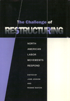

<body bgcolor="#FFFFFF" text="#000000" link="#0000FF" vlink="#CC0000" alink="#CC0000"><center><hr width="350" size="1" align="center" noshade>An in-depth comparison of U.S. and Canadian economic restructuring<hr width="350" size="1" align="center" noshade><p><a href="https://cdcshoppingcart.uchicago.edu/Cart/ChicagoBook.aspx?ISBN=9780877229810&&PRESS=temple" target="_top">Buy this book!</a> | <a href="https://cdcshoppingcart.uchicago.edu/Cart/Cart.aspx?PRESS=temple" target="_top">View Cart</a> | <a href="https://cdcshoppingcart.uchicago.edu/Cart/Cart.aspx?PRESS=temple" target="_top">Check Out</a></p><p></p></center><!--none//--><h1>The Challenge of Restructuring</h1>
<H2>North American Labor Movements Respond</H2>
<h3>edited by Jane Jenson and Rianne Mahon</h3>
<P>cloth 0-87722-981-3 $63.50, Mar 93, <FONT COLOR=#990033>Out of Stock Unavailable</FONT>
<BR> 488 pp
6x9
</P><p>In this volume, political scientists, sociologists, lawyers, specialists in labor relations, economists, and unionists from Canada and the United States address the future of labor-management relations in two economies that are undergoing fundamental economic restructuring. <I>The Challenge of Restructuring</I> discusses how labor should respond to "restructuring," a euphemistic term for the economic squeeze on workers for givebacks to avoid plant closings and for the business efforts to abolish union workforces.
<BR>&nbsp;<h2>Contents</h2><P>
<p>Acknowledgments
<p>1. Introduction: North American Labor: Divergent Trajectories &#150 Jane Jenson and Rianne Mahon
<p><b>Part I: Two Decades of Restructuring and Political Change</b>
<br>2. Economistic Unionism in Crisis: The Origins, Consequences, and Prospects of Divergence in Labor Movement Characteristics &#150 Ian Robinson
<br>3. Don't Worry, Be Happy: The Postwar Decline of Private-Sector Unionism in the United States &#150 Joel Rogers
<br>4. Legacies for Canadian Labor of Two Decades of Crisis &#150 Jane Jenson and Rianne Mahon
<br>5. Unionism in a Different Context: The Case of Quebec &#150 G�rard H�bert
<p><b>Part II: The Political and Legal Context of Trade Union Action</b>
<br>6. Cooperation for What? The Democratic-Labor Alliance in the Reagan-Bush Era &#150 Richard Valelly
<br>7. Labor, the New Democratic Party, and the 1988 Federal Election &#150 Elaine Bernard
<br>8. An Uneasy Alliance: The Parti Qu�b�cois and the Unions &#150 A. Brian Tanquay
<br>9. State Structures and the Processing of Unfair Labor Practice Cases in the United States and Canada &#150 Peter G. Bruce
<p><b>Part III: The Challenge of a Changing Labor Force</b>
<br>10. Unionism in the Private Service Sector: A Canada-U.S. Comparison &#150 Noah Meltz
<br>11. Union Responses to Workforce Feminization in the United States &#150 Ruth Milkman
<br>12. One Union Responds: The Case of the Canadian Union of Postal Workers &#150 Julie White
<br>13. Recognizing the Working Mother: The Quebec Labor Movement and the Feminization of the Labor Force &#150 C�line Saint-Pierre
<p><b>Part IV: Workplace Restructuring: Company Unionism or Industrial Democracy?</b>
<br>14. Recent Innovations in Labor-Management Relations: The Risks and Prospects for Labor in Canada and the United States &#150 Don Wells
<br>15. Whither Social Unionism? Labor and Restructuring in the U.S. Auto Industry &#150 Stephen Herzenberg
<br>16. Curtains or Encore: Possibilities of Restructuring in the Canadian Auto Industry &#150 Charlotte Freeman
<p><b>Part V: The Future: Strategic Continuity or Change?</b>
<br>17. What does the Future Hold for U.S. Unionism? &#150 Richard Freeman
<br>18. Capitalist Restructuring and the Canadian Labor Movement &#150 Donald Swartz
<br>19. Quebec Labor, Politics, and the Economic Crisis: Defensive Accommodation Faces the Future &#150 Carla Lipsig-Mumm�
<p>About the Contributors
</P><BR>&nbsp;<H2>About the Author(s)</H2>
<P><b>Jane Jenson</b> is Professor of Political Science at Carleton University.</P>
<P><b>Rianne Mahon</b> is a Professor in the School of Public Administration at Carleton University.</P>
<P>Contributors: Elaine Bernard, Peter G. Bruce, Charlotte Freeman, G�rard H�bert, Stephen Herzenberg, Carla Lipsig-Mumm�, Noah Meltz, Ian Robinson, Joel Rogers, C�line Saint-Pierre, Donald Swartz, A. Brian Tanquay, Richard Valelly, Don Wells, Julie White, and the editors.</P>
<BR><H2>Subject Categories</H2>
<p><A HREF="/tempress/labor.html" TARGET="_top">Labor Studies and Work</a>
<BR><A HREF="/tempress/political.html" TARGET="_top">Political Science and Public Policy</a>
</p>
<BR><h2 class="inpageheading">In the series</H2>
<P><I><a href="http://www.temple.edu/tempress/labor_change.html" onMouseOver="window.status='Click for other books in this series!'; return true;" onMouseOut="window.status=''; return true;" target="_top">Labor and Social Change</a></i>, edited by Paula Rayman and Carmen Sirianni.
</p><p><i>Labor and Social Change</i>, edited by Paula Rayman and Carmen Sirianni, includes books on workplace issues like worker participation, quality of work life, shorter hours, technological change, and productivity, as well as union and community organizing and ethnographies of particular occupations.</p>
<p align="center"><a href="https://cdcshoppingcart.uchicago.edu/Cart/ChicagoBook.aspx?ISBN=9780877229810&&PRESS=temple" target="_top">Buy this book!</a> | <a href="https://cdcshoppingcart.uchicago.edu/Cart/Cart.aspx?PRESS=temple" target="_top">View Cart</a> | <a href="https://cdcshoppingcart.uchicago.edu/Cart/Cart.aspx?PRESS=temple" target="_top">Check Out</a></p><p><font face="Arial" size="1"><a href="copyright.html" onMouseOver="window.status='Web Copyright Policy';return true;" onMouseOut="window.status=''" title="Web Copyright Policy">&copy;</a> 2015 <a href="http://www.temple.edu" target="new" onMouseOver="window.status='Link to Temple University home page';return true;" onMouseOut="window.status=''" title="Link to Temple University home page">Temple University</a>. All Rights Reserved. http://www.temple.edu/tempress/titles/975_reg.html</font></p>